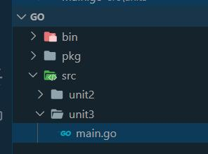

ΔΩΡΕΑΝ ΜΑΘΗΜΑΤΑ GO

Στο σημερινό δωρεάν μάθημα προγραμματισμού Go, θα δούμε διάφορους
τρόπους να ορίσουμε μεταβλητές στην Go όπως και μερικούς κανόνες έτσι ώστε να
αποφύγουμε τυχόν λάθη στον κώδικα μας.
Πριν ξεκινήσουμε την θεωρία μας ας δημιουργήσουμε έναν καινούργιο φάκελο με το
όνομα unit3 κάτω από το src, και
μετά ένα καινούργιο main.go αρχείο.

Τι είναι λοιπόν μια μεταβλητή? Ορίζουμε σαν μεταβλητή το σημείο
εκείνο του κώδικα στο οποίο μπορούμε να αποθηκεύσουμε προσωρινά μια τιμή.
Επίσης μια μεταβλητή, εκτός από το όνομα που πρέπει να της δώσουμε,
συνδέεται και με ένα συγκεκριμένο data type. Πως ορίζουμε λοιπόν μια
μεταβλητή στον κώδικα μας? Ο ορισμός της μεταβλητής ξεκινάει με την λέξη
κλειδί var. Αμέσως μετά ακολουθεί το όνομα της μεταβλητής και
τέλος το
είδος των στοιχείων που δέχεται δηλαδή το data type (για παράδειγμα ακέραιους,
string κτλ). Όταν στην Println( ) function χρησιμοποιήσουμε την μεταβλητή, τότε
ζητάμε να εκτυπώσουμε την τιμή την οποία περιέχει εκείνη την στιγμή. Ας δούμε
ένα απλό παράδειγμα.
main.go
package main
import "fmt"
func main() {
var x string = "Welcome to Kassapoglou site"
fmt.Println(x)
}
Output
Welcome to Kassapoglou site
Φυσικά δεν είναι αναγκαίο όταν ορίζουμε την μεταβλητή να της αναθέτουμε
αμέσως μια τιμή. Η μεταβλητή μπορεί να λάβει την τιμή της αργότερα μέσα στο πρόγραμμα.
Σημειώστε το γεγονός ότι η τιμή που θα πάρει μια μεταβλητή μπορεί να μην είναι η τελική.
Μιας μεταβλητής η τιμή μπορεί να αλλάξει πολλαπλές φορές κατά την εκτέλεση ενός
προγράμματος. Ας αλλάξουμε το πρόγραμμα μας τώρα, έτσι ώστε σαν πρώτο βήμα να ορίσουμε
την μεταβλητή και σαν δεύτερο βήμα να της αναθέσουμε μια τιμή.
main.go
package main
import "fmt"
func main() {
var x string
x = "Welcome to Kassapoglou site"
fmt.Println(x)
}
Output
Welcome to Kassapoglou site
Ας προσθέσουμε άλλη μια μεταβλητή αλλά αυτή τη φορά θα δέχεται έναν ακέραιο
αριθμό. Ακόμα δεν έχουμε καλύψει επίσημα όλα τα data types που υποστηρίζει η Go.
Αυτό το θέμα θα το καλύψουμε στην επόμενη ενότητα. Για τώρα απλά συγκεντρωνόμαστε
στο πως να ορίζουμε σωστά μεταβλητές. Το επόμενο παράδειγμα προσθέτει μια ακόμα
μεταβλητή που δέχεται ακέραιους αριθμούς.
main.go
package main
import "fmt"
func main() {
var question string
question = "How many courses is the Kassapoglou site offering so far?"
var numberofcourses int
numberofcourses = 5
fmt.Println(question)
fmt.Println("The number of online seminars is:", numberofcourses)
}
Output
How many courses is the Kassapoglou site offering so far?
The number of online seminars is: 5
Επειδή η Go αναγνωρίζει το γεγονός ότι η πιο συνηθισμένη κίνηση ενός
προγραμματιστή είναι να ορίσει μια μεταβλητή και να την αρχικοποιήσει με
κάποια τιμή προσφέρει δύο ακόμα σύντομους τρόπους ορισμού και αρχικοποίησης
μιας μεταβλητής.
Ο πρώτος τρόπος είναι απλά να δώσουμε ένα όνομα στην μεταβλητή.
Το data type θα το αναγνωρίσει αυτόματα η Go ανάλογα με την τιμή που θα
ορίσουμε στην μεταβλητή. Αυτό που αλλάζει στο συντακτικό είναι μόνο ότι
στην ισότητα έχουμε προσθέσει και το colon ( : ) σύμβολο.
main.go
package main
import "fmt"
func main() {
question := "How many courses is the Kassapoglou site offering so far?"
numberofcourses := 5
fmt.Println(question)
fmt.Println("The number of online seminars is:", numberofcourses)
}
Output
How many courses is the Kassapoglou site offering so far?
The number of online seminars is: 5
Θα μπορούσαμε να χρησιμοποιήσουμε και την λέξη var χωρίς το
colon ( : ) και χωρίς να ορίσουμε το data type της μεταβλητής.
Ξανά η Go θα το αναγνωρίσει σωστά.
main.go
package main
import "fmt"
func main() {
var question = "How many courses is the Kassapoglou site offering so far?"
var numberofcourses = 5
fmt.Println(question)
fmt.Println("The number of online seminars is:", numberofcourses)
}
Output
How many courses is the Kassapoglou site offering so far?
The number of online seminars is: 5
Η Go έχει όμως έναν αυστηρό κανόνα – αν ορίσετε μια μεταβλητή,
ακόμα και αν την αρχικοποιήσετε, αλλά δεν την χρησιμοποιήσετε μέσα στον
κώδικα σας, θα παραπονεθεί. Στην ουσία δεν αφήνει να ορίζετε μεταβλητές χωρίς
λόγο. Αν ορίσετε μια μεταβλητή τότε είσαστε υποχρεωμένοι να την χρησιμοποιήσετε.
Ας δούμε μια τέτοια περίπτωση στην οποία ορίζουμε δύο μεταβλητές αλλά
χρησιμοποιούμε μόνο την μια.
main.go
package main
import "fmt"
func main() {
var x = "Hello"
var y = "world"
fmt.Println(x)
}
Output
src\unit2\tempCodeRunnerFile.go:7:6: y declared and not used
Αν τώρα, το να ορίσετε μια μεταβλητή χωρίς να την
χρησιμοποιήσετε, είναι κάτι επιθυμητό, τότε υπάρχει τρόπος να ξεγελάσετε
τον compiler της Go αναθέτοντας την μεταβλητή στο σύμβολο της κάτω παύλας ( _ ).
Ας δούμε λοιπόν τώρα πως το προηγούμενο πρόγραμμα μπορεί να διορθωθεί έτσι ώστε να
εκτελεστεί χωρίς κανένα λάθος άσχετα να χρησιμοποιούμε μόνο την μια από τις δύο μεταβλητές που
ορίσαμε.
main.go
package main
import "fmt"
func main() {
var x = "Hello"
var y = "world"
_ = y
fmt.Println(x)
}
Output
Hello
Στο ποιο πάνω πρόγραμμα έχουμε ορίσει δύο string μεταβλητές
που η κάθε μια ισούται με μια τιμή. Πως θα μπορούσαμε να δείξουμε
ένα ενιαίο μήνυμα που να περιέχει και τις δύο λέξεις? Η απάντηση είναι
απλή – μπορούμε να χρησιμοποιήσουμε το σύμβολο της πρόσθεσης. Επειδή
όμως έχουμε strings και όχι αριθμούς η Go θα το καταλάβει και αντί να
εκτελέσει την πράξη της πρόσθεσης θα “κολλήσει” την μια μεταβλητή δίπλα
στην άλλη. Για αυτό το λόγο αφήνουμε και ένα κενό στο τέλος της πρώτης
μεταβλητής και του quote έτσι ώστε όταν εμφανιστεί η τελική πρόταση να
υπάρχει ένα κενό ανάμεσα στις λέξεις.
main.go
package main
import "fmt"
func main() {
var x = "Hello "
var y = "World"
fmt.Println(x + y)
}
Output
Hello World
Πριν κλείσουμε την ενότητα ας δούμε μερικούς και απλούς κανόνες
για το πως να ονομάζουμε σωστά τις μεταβλητές μας στην γλώσσα προγραμματισμού
Go. Η Go επιτρέπει να ο πρώτος χαρακτήρας της μεταβλητής να είναι το
underscore ( _ ) ή μόνο γράμμα. Μετά από τον πρώτο χαρακτήρα μπορείτε να
χρησιμοποιήσετε συνδυασμό γραμμάτων, underscore ( _ ) και αριθμών.
Επίσης τα ονόματα των μεταβλητών πρέπει να περιγράφουν την λειτουργία
της μεταβλητής. Θα ήταν προτιμότερο λοιπόν να ονομάσετε μια μεταβλητή name
η οποία δέχεται ένα όνομα αντί για απλά x.
Τέλος συνηθίζεται, αν το όνομα της μεταβλητής αποτελείται
από δύο ή περισσότερες λέξεις, να χρησιμοποιούμε το camelCase δηλαδή
να γράφουμε το όνομα της πρώτης λέξης με μικρά γράμματα ενώ το πρώτο γράμμα
από την δεύτερη λέξη και μετά να το γράφουμε με κεφαλαίο χαρακτήρα -
για παράδειγμα firstName.
Πίσω στις ενότητες GO Programming
Michail Kassapoglou Admin
Γεια σας, είμαι ο Μιχάλης Κασάπογλου και θα σας διδάξω με τον ποιο απλό
τρόπο να προγραμματίζετε σε Python. Ασχολούμαι με την τεχνική εκπαίδευση
σε διάφορες πλατφόρμες, λειτουργικά συστήματα και γλώσσες προγραμματισμού
πάνω από 20 έτη. Κατέχω έναν αρκετά μεγάλο αριθμό πιστοποιήσεων
και σαν Τraining Lead στην Intrasoft έχω την δυνατότητα να αναβαθμίζω συνεχώς
τις γνώσεις μου και να έχω άμεση επαφή με αληθινά projects και εξειδικευμένες
μεθόδους
ανάπτυξης εφαρμογών που έχουν υψηλές απαιτήσεις.
Για τυχόν ερωτήσεις σας μπορείτε να επικοινωνήσετε μαζί μου
στο Michail.Kassapoglou@gmail.com
Σας ευχαριστώ που επισκεφτήκατε τα δωρεάν μαθήματα προγραμματισμού GO.